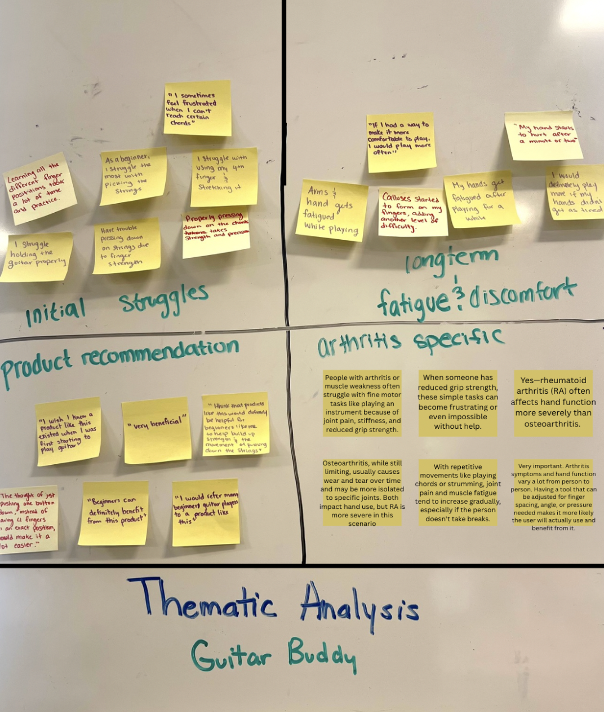
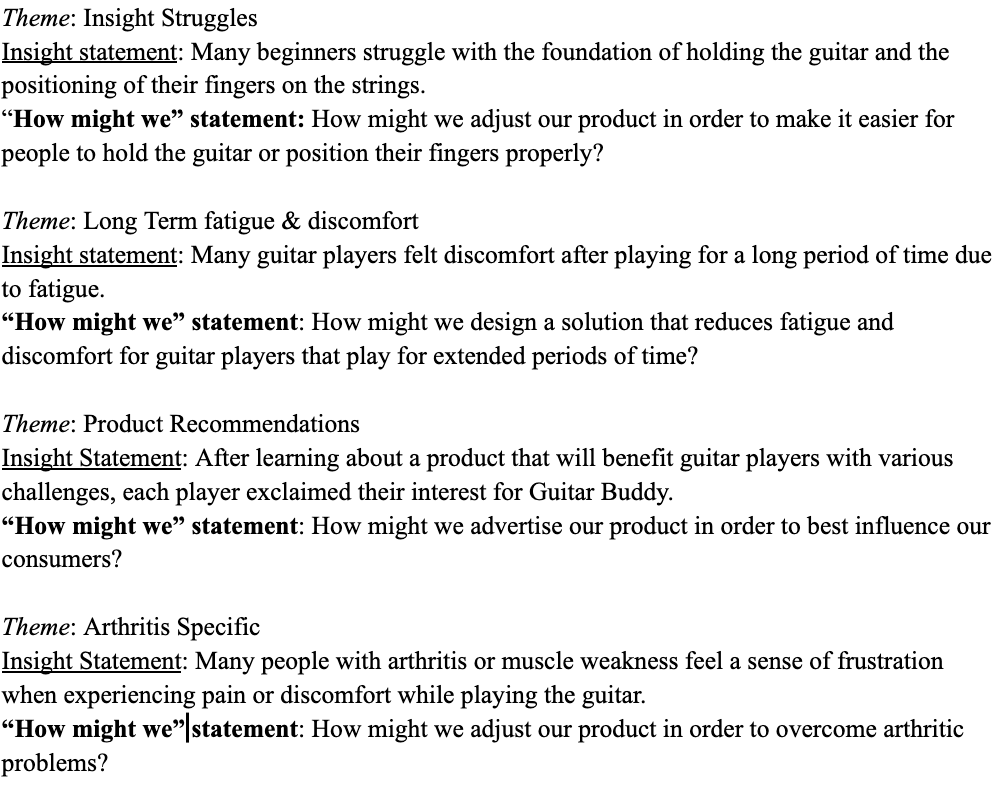
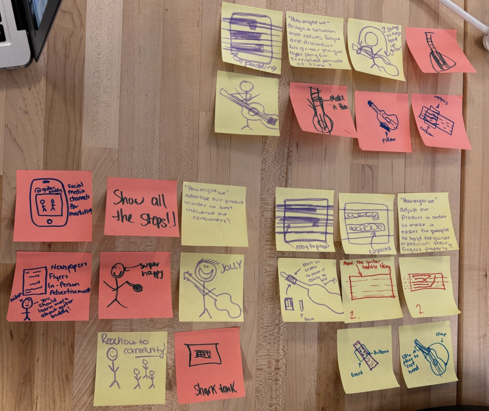
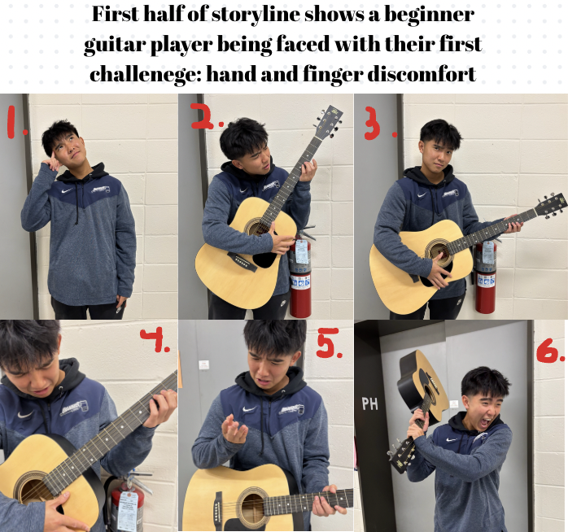
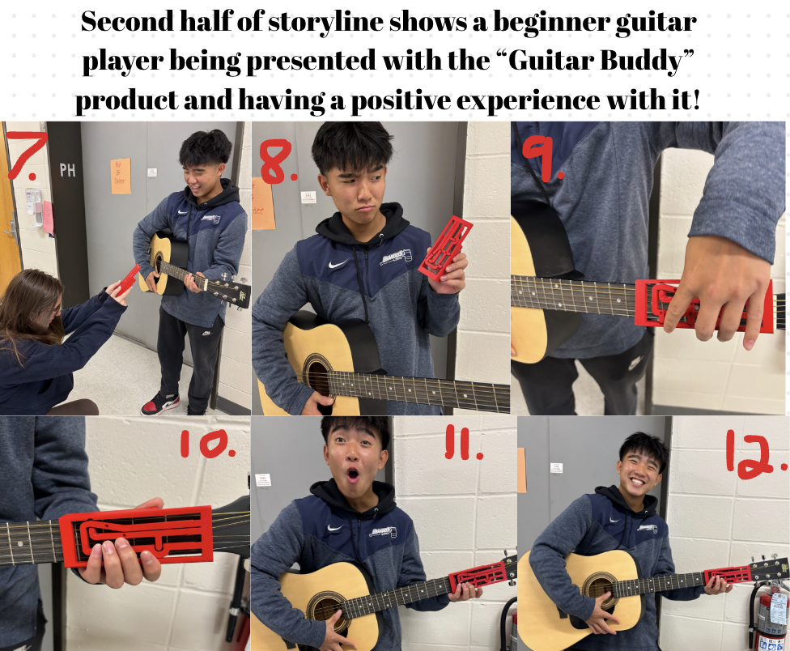
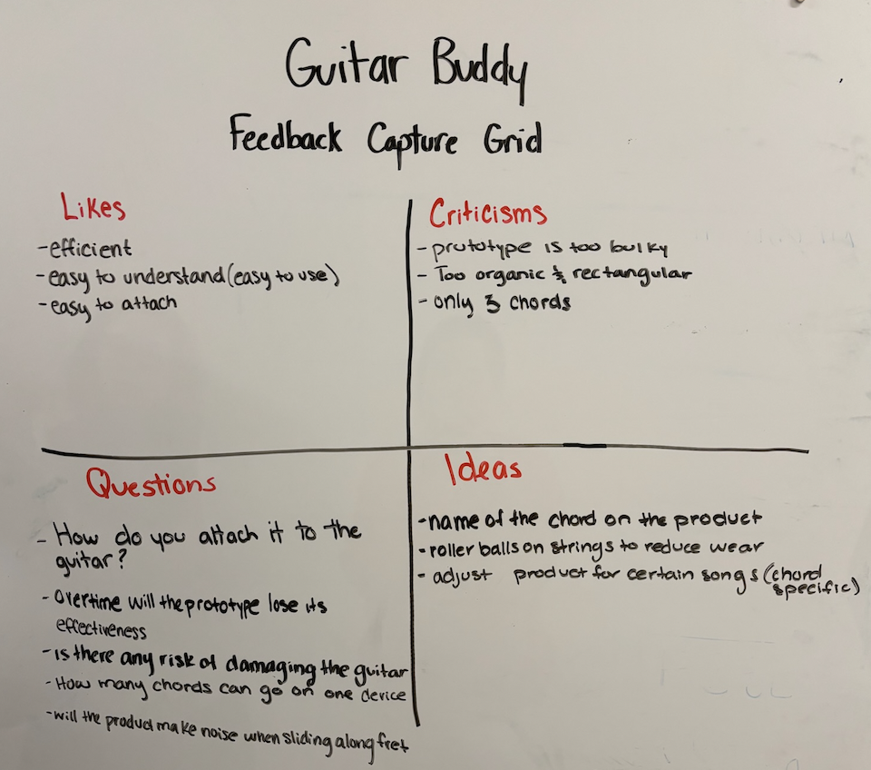
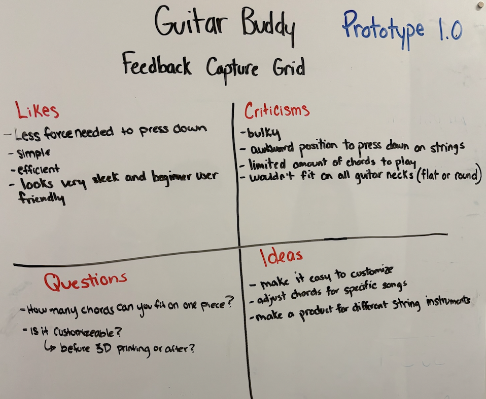
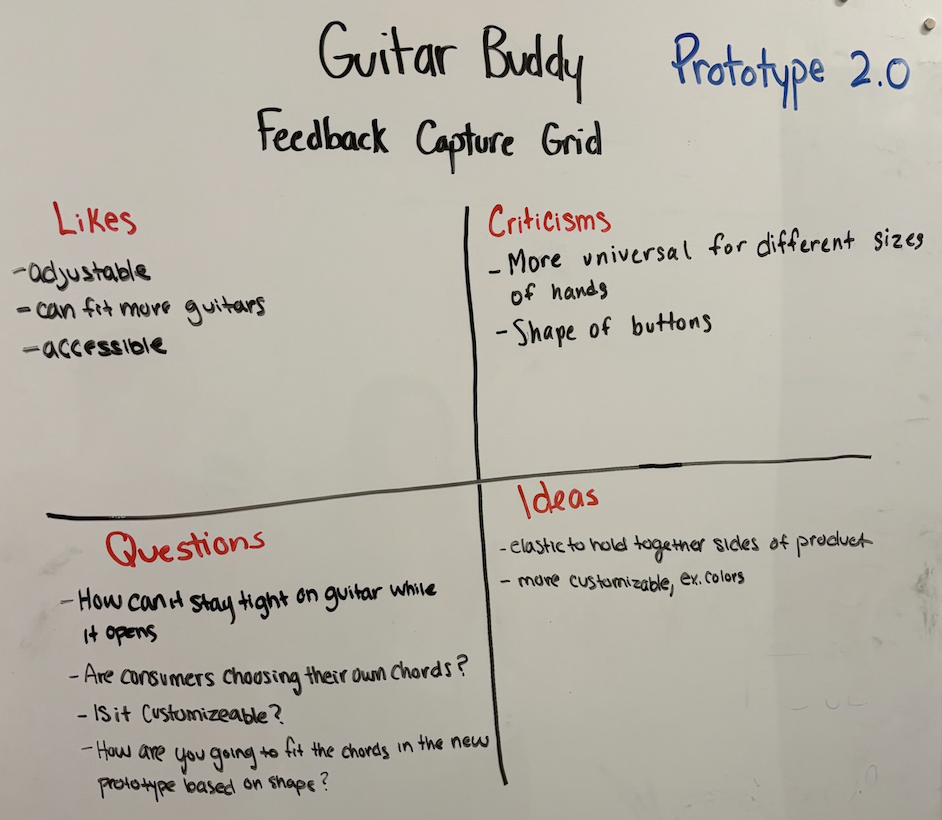
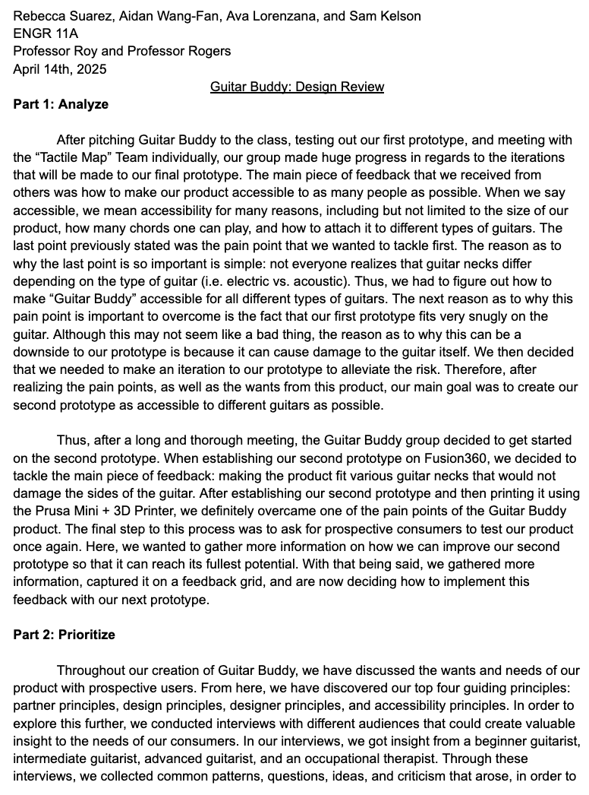
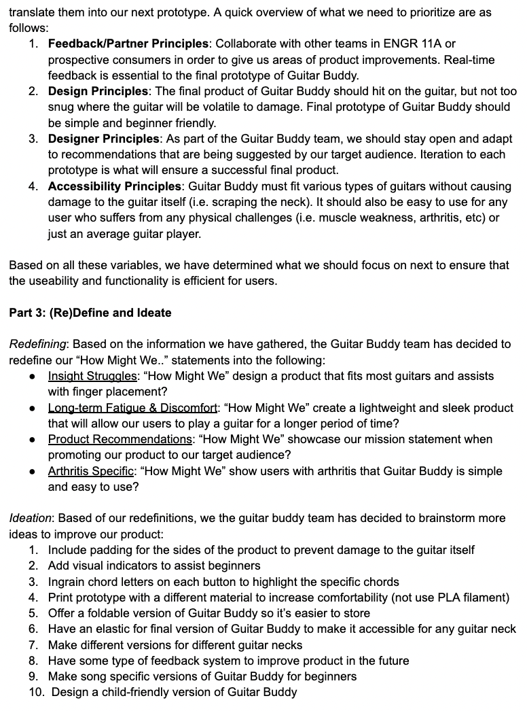

Journey and Empathy Charts
Before really starting our final project for this class, the first thing my group and I were assigned was to interview 4 different people that would help us determine if our product would be make a positive change to a specific group of people. After each of my group member, Aidan and Ava, as well as myself, conducted 20 minute interviews, we were able to complete and establish these charts:

Problem Definition
Learning how to play the guitar may be a time-consuming, frustrating, and overall, a negative experience to the average consumer. Additionally, learning how to play guitar with a hand disability may result in zero attempt of learning or giving up due to the physical and mental demands. So, what if there was a product that could help both beginner guitar players and those with a disability? Now introducing, Guitar Buddy!
Thematic Analysis
After interviewing each significant person, my group and I moved onto the next step: creating a thematic analysis. Here, my group and I decided to right down themes we witnessed in each of our interviews. From this, we determined that there are four distinct groups: initial struggles, longterm fatigue and discomfort, product recommendation, and arthritis specific.
Determining our Insight and "How Might We?" statements:
After creating themes in our thematic analysis, it was now time for my group and I to create our insight and "How Might We?" statements to further help us understand the problem that we are trying to overcome. Thus, after a brief overview of our thematic chart, we establish these statements:
Brainstorming
After creating a thematic analysis chart, as well as creating our insight and "How Might We?" statements, to help organize our thoughts, the next step was to start brainstorming what our final product would look like. My group and I then decided to take 5 minutes to brainstorm what the first prototype of Guitar Buddy would look like:
Storyline
After having a general understanding of what Guitar Buddy's first prototype will be, we decided to create a
storyline of what it would be like for an average beginner guitar player to use it. This is when Sam, my groups final team member, decided to design (by using Fusion360) and
print out our first prototype (you will get more insights as to how this was established later on!). When establishing our storyline, we realized that Guitar Buddy
may be a solution for many different types of people. With that being said, our group decided to showcase the challenges a beginner guitar player may face for our first storyline.
After we determined that this is the type of consumer that we would like to showcase first, it was time to create a humorous, yet practical storyline alongside my group members,
Aidan and Ava:


Feedback Capture Grid #1
After presenting our storyboard and the concept of Guitar Buddy to our peers and professors, my group and I were able to execute our first
feedback capture grid:

Feedback Capture Grid #2
The next step to this process to ensure that Guitar Buddy would be a success, we asked our peers to try out and give us feedback to our
first prototype. This is essential to our process when creating our second prototype. Thus, we decided to create a second feedback capture grid to make sure the information our
peers gave us was organized:

Feedback Capture Grid #3
Finally, after meeting with our peers and hearing what they had to say about our first prototype, we decided to create our second protoype.
After discussing the feedback from our first two capture grids, we decided to create our second prototype of Guitar Buddy. From here, we did the exact process for collecting feedback:
asking potential consumers to test the prototype and to give us feedback. With this information, we established our third feedback capture grid:

Design Review
After executing 3 feedback capture grids, asking our peers and prospective consumers to test out the first two prototypes of Guitar Buddy, and finally reconnecting
with those we have already interviewed, the Guitar Buddy team decided to establish a "Design Review" paper that would help us organize our thoughts
and aspirations for the final prototype. Thus, we conducted a 2 page paper that will help us outline what we need to do in order to ensure success and eventually, present Guitar Buddy to our professors and peers:


Bibliography
Betts, J. D. (2019). Report on whole child outcomes of lead guitar & arizona arts in schools programs. Retrieved from https://cfawp.s3.amazonaws.com/wp-content/uploads/sites/31/Report-on-AZ-Arts-in-Schools-Lead-Guitar-Outcomes-by-Dr.-J.-David-Betts.pdf
ChordBuddy. (2025). ChordBuddy on shark tank. Retrieved from https://www.youtube.com/watch?v=pLc5SR-7d74